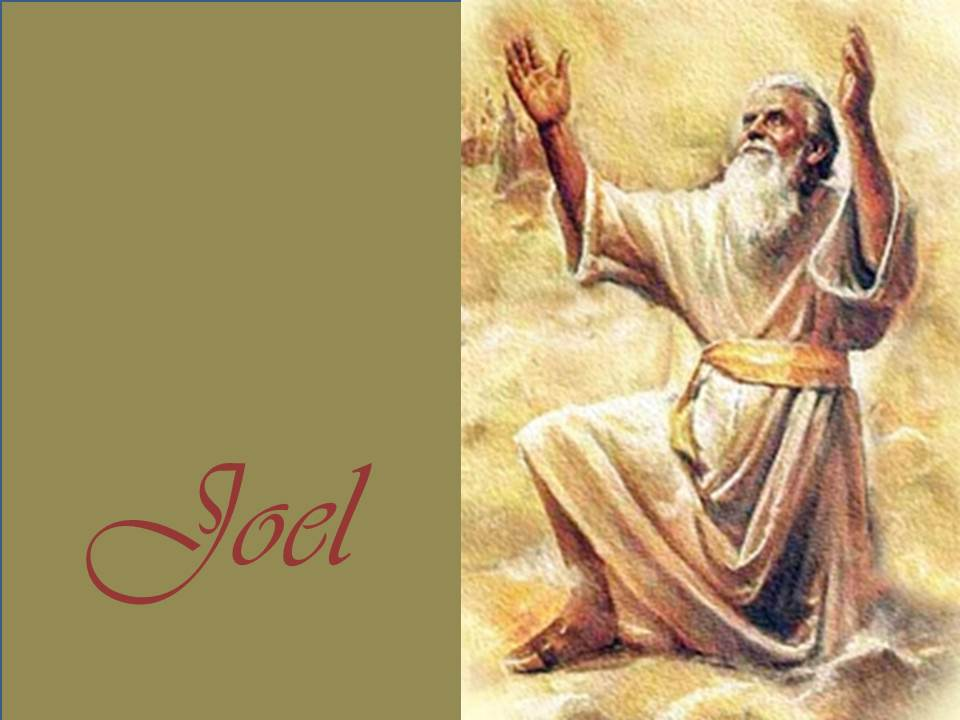

El tema principal del libro de Joel, es el Día del Señor, el Día de la ira y del juicio de Dios. Este es el Día en el cual
Dios revela sus atributos de ira, poder y santidad, y es un día terrible para sus enemigo.
.
CAPÍTULOS:
El libro de Joel tiene 4 capítulos y esta dividido en dos partes.
ENSEÑANZA:
Es que el arrepentimiento y la penitencia llevan al hombre a reconciliarse con la divinidad. Dios reserva las
bendiciones para los tiempos mesiánicos, por eso Judá sufre tanto ahora.
HISTORIA:
Joel describe simbólicamente a las langostas como la marcha de un ejército humano, y ve todo esto como el juicio divino viniendo contra la nación por sus pecados. El libro se destaca por dos grandes eventos. Uno, es la invasión de langostas, y el otro, el derramamiento del Espíritu.

MISIÓN
Exhorta a todo el pueblo y a los sacerdotes de la tierra a ayunar y humillarse mientras buscan el perdón de Dios.
DATO CURIOSO:
Por las referencias del texto su prédica se desarrolla en Judá y Jerusalén hacia el 830-820 a.C. La única referencia a su vida personal es que fue hijo de Petuel.